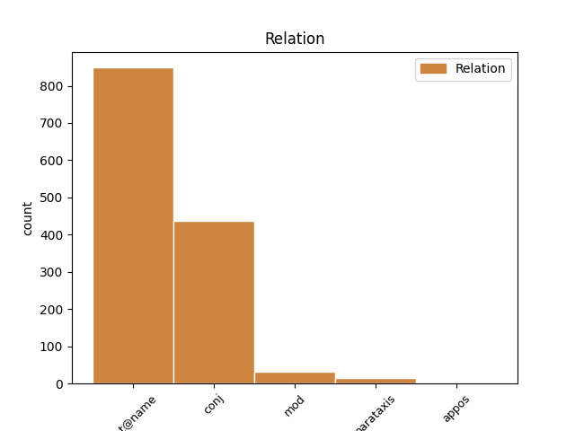

Distribution of features within this leaf

Agreement Rules sorted by frequency.
- When the dependent token is the flat multiword expression(flat@name) of the head token, and the head token is PROPN and the dependent token is PROPN.
1 Kā _ _ _ _ 0 _ _ _
2 atzīst _ _ _ _ 0 _ _ _
3 vairāki _ _ _ _ 0 _ _ _
4 VD _ _ _ _ 0 _ _ _
5 teologi _ _ _ _ 0 _ _ _
6 , _ _ _ _ 0 _ _ _
7 VD _ _ _ _ 0 _ _ _
8 tekstiem _ _ _ _ 0 _ _ _
9 piemērotāka _ _ _ _ 0 _ _ _
10 ir _ _ _ _ 0 _ _ _
11 skandināvu _ _ _ _ 0 _ _ _
12 pētnieka _ _ _ _ 0 _ _ _
13 Johana Johans PROPN npmsg1 Case=Gen|Gender=Masc|Number=Sing 0 _ _ _
14 Galtunga Galtunga PROPN npfsn4 Case=Nom|Gender=Fem|Number=Sing 13 flat@name _ LvtbNodeId=a-z99-p16s1w14
15 ( _ _ _ _ 0 _ _ _
16 Galtung _ _ _ _ 0 _ _ _
17 ) _ _ _ _ 0 _ _ _
18 piedāvātā _ _ _ _ 0 _ _ _
19 teorija _ _ _ _ 0 _ _ _
20 par _ _ _ _ 0 _ _ _
21 vardarbību _ _ _ _ 0 _ _ _
22 , _ _ _ _ 0 _ _ _
23 kurā _ _ _ _ 0 _ _ _
24 izšķir _ _ _ _ 0 _ _ _
25 tiešu _ _ _ _ 0 _ _ _
26 , _ _ _ _ 0 _ _ _
27 strukturālu _ _ _ _ 0 _ _ _
28 un _ _ _ _ 0 _ _ _
29 kultūras _ _ _ _ 0 _ _ _
30 vardarbību _ _ _ _ 0 _ _ _
31 . _ _ _ _ 0 _ _ _
1 Aptauja _ _ _ _ 0 _ _ _
2 bija _ _ _ _ 0 _ _ _
3 veikta _ _ _ _ 0 _ _ _
4 Rīgā _ _ _ _ 0 _ _ _
5 , _ _ _ _ 0 _ _ _
6 Jūrmalā _ _ _ _ 0 _ _ _
7 , _ _ _ _ 0 _ _ _
8 Jelgavā _ _ _ _ 0 _ _ _
9 , _ _ _ _ 0 _ _ _
10 Ventspilī _ _ _ _ 0 _ _ _
11 , _ _ _ _ 0 _ _ _
12 Liepājā _ _ _ _ 0 _ _ _
13 , _ _ _ _ 0 _ _ _
14 Valmierā _ _ _ _ 0 _ _ _
15 , _ _ _ _ 0 _ _ _
16 Cēsīs _ _ _ _ 0 _ _ _
17 , _ _ _ _ 0 _ _ _
18 Daugavpilī Daugavpils PROPN npfsl6 Case=Loc|Gender=Fem|Number=Sing 0 _ _ _
19 , _ _ _ _ 0 _ _ _
20 Ludzā Ludza PROPN npfsl4 Case=Loc|Gender=Fem|Number=Sing 18 conj _ LvtbNodeId=a-z91-p30s5w20|SpaceAfter=No
21 . _ _ _ _ 0 _ _ _
1 Uznākot _ _ _ _ 0 _ _ _
2 Inta Ints PROPN npmsg1 Case=Gen|Gender=Masc|Number=Sing 4 mod _ LvtbNodeId=a-z83-p126s7w2
3 Jurjāna _ _ _ _ 0 _ _ _
4 Bazilam Bazils PROPN npmsd1 Case=Dat|Gender=Masc|Number=Sing 0 _ _ _
5 , _ _ _ _ 0 _ _ _
6 abi _ _ _ _ 0 _ _ _
7 jūtas _ _ _ _ 0 _ _ _
8 it _ _ _ _ 0 _ _ _
9 kā _ _ _ _ 0 _ _ _
10 iztraucēti _ _ _ _ 0 _ _ _
11 savā _ _ _ _ 0 _ _ _
12 nodarbē _ _ _ _ 0 _ _ _
13 – _ _ _ _ 0 _ _ _
14 viņi _ _ _ _ 0 _ _ _
15 iegrimst _ _ _ _ 0 _ _ _
16 katrs _ _ _ _ 0 _ _ _
17 sevī _ _ _ _ 0 _ _ _
18 , _ _ _ _ 0 _ _ _
19 Ģ. _ _ _ _ 0 _ _ _
20 Krūmiņa _ _ _ _ 0 _ _ _
21 sejā _ _ _ _ 0 _ _ _
22 atspoguļojas _ _ _ _ 0 _ _ _
23 groteskas _ _ _ _ 0 _ _ _
24 svētlaimes _ _ _ _ 0 _ _ _
25 grimase _ _ _ _ 0 _ _ _
26 , _ _ _ _ 0 _ _ _
27 R. _ _ _ _ 0 _ _ _
28 Razumas _ _ _ _ 0 _ _ _
29 – _ _ _ _ 0 _ _ _
30 ironisks _ _ _ _ 0 _ _ _
31 atsvešinājums _ _ _ _ 0 _ _ _
32 . _ _ _ _ 0 _ _ _
1 Zambijā Zambija PROPN npfsl4 Case=Loc|Gender=Fem|Number=Sing 0 _ _ _
2 ( _ _ _ _ 0 _ _ _
3 Dienvidāfrika Dienvidāfrika PROPN npfsn4 Case=Nom|Gender=Fem|Number=Sing 1 parataxis _ LvtbNodeId=a-p8992-p2s1w3|SpaceAfter=No
4 ) _ _ _ _ 0 _ _ _
5 nofilmēts _ _ _ _ 0 _ _ _
6 kāds _ _ _ _ 0 _ _ _
7 drosmīgs _ _ _ _ 0 _ _ _
8 zilonēns _ _ _ _ 0 _ _ _
9 , _ _ _ _ 0 _ _ _
10 kurš _ _ _ _ 0 _ _ _
11 uzvarēja _ _ _ _ 0 _ _ _
12 cīņā _ _ _ _ 0 _ _ _
13 ar _ _ _ _ 0 _ _ _
14 14 _ _ _ _ 0 _ _ _
15 lauvām _ _ _ _ 0 _ _ _
16 . _ _ _ _ 0 _ _ _
1 Karloss _ _ _ _ 0 _ _ _
2 Čipa _ _ _ _ 0 _ _ _
3 ir _ _ _ _ 0 _ _ _
4 23 _ _ _ _ 0 _ _ _
5 gadus _ _ _ _ 0 _ _ _
6 jauns _ _ _ _ 0 _ _ _
7 mūziķis _ _ _ _ 0 _ _ _
8 , _ _ _ _ 0 _ _ _
9 kurš _ _ _ _ 0 _ _ _
10 šobrīd _ _ _ _ 0 _ _ _
11 dzīvo _ _ _ _ 0 _ _ _
12 un _ _ _ _ 0 _ _ _
13 studē _ _ _ _ 0 _ _ _
14 kompozīciju _ _ _ _ 0 _ _ _
15 Minhenē Minhene PROPN npfsl5 Case=Loc|Gender=Fem|Number=Sing 0 _ _ _
16 , _ _ _ _ 0 _ _ _
17 Vācijā Vācija PROPN npfsl4 Case=Loc|Gender=Fem|Number=Sing 15 appos _ LvtbNodeId=a-p9739-p2s1w17|SpaceAfter=No
18 . _ _ _ _ 0 _ _ _
Disagree Examples:
1 Vēja _ _ _ _ 0 _ _ _
2 veidotās _ _ _ _ 0 _ _ _
3 kāpas _ _ _ _ 0 _ _ _
4 sastopamas _ _ _ _ 0 _ _ _
5 gan _ _ _ _ 0 _ _ _
6 Piejūras _ _ _ _ 0 _ _ _
7 zemienē _ _ _ _ 0 _ _ _
8 , _ _ _ _ 0 _ _ _
9 gan _ _ _ _ 0 _ _ _
10 Latvijas _ _ _ _ 0 _ _ _
11 iekšzemes _ _ _ _ 0 _ _ _
12 līdzenumos _ _ _ _ 0 _ _ _
13 ( _ _ _ _ 0 _ _ _
14 piemēram _ _ _ _ 0 _ _ _
15 , _ _ _ _ 0 _ _ _
16 Trapenes _ _ _ _ 0 _ _ _
17 līdzenumā _ _ _ _ 0 _ _ _
18 Gulbenes _ _ _ _ 0 _ _ _
19 rajonā _ _ _ _ 0 _ _ _
20 , _ _ _ _ 0 _ _ _
21 Sedas _ _ _ _ 0 _ _ _
22 līdzenumā _ _ _ _ 0 _ _ _
23 Sedas Seda PROPN npfsg4 Case=Gen|Gender=Fem|Number=Sing 0 _ _ _
24 – _ _ _ _ 0 _ _ _
25 Strenču Strenči PROPN npmdg2 Case=Gen|Gender=Masc|Number=Ptan 23 conj _ LvtbNodeId=a-c61-p64s6w25
26 apkārtnē _ _ _ _ 0 _ _ _
27 un _ _ _ _ 0 _ _ _
28 citur _ _ _ _ 0 _ _ _
29 ) _ _ _ _ 0 _ _ _
30 . _ _ _ _ 0 _ _ _
1 Viņa _ _ _ _ 0 _ _ _
2 pastāstīja _ _ _ _ 0 _ _ _
3 , _ _ _ _ 0 _ _ _
4 ka _ _ _ _ 0 _ _ _
5 pagājušajā _ _ _ _ 0 _ _ _
6 gadā _ _ _ _ 0 _ _ _
7 piedalījusies _ _ _ _ 0 _ _ _
8 šādā _ _ _ _ 0 _ _ _
9 pasākumā _ _ _ _ 0 _ _ _
10 Varakļānos Varakļāni PROPN npmdl1 Case=Loc|Gender=Masc|Number=Ptan 0 _ _ _
11 Latgalē Latgale PROPN npfsl5 Case=Loc|Gender=Fem|Number=Sing 10 mod _ LvtbNodeId=a-p10700-p2s2w11|SpaceAfter=No
12 . _ _ _ _ 0 _ _ _
1 Inese Inese PROPN npfsn5 Case=Nom|Gender=Fem|Number=Sing 0 _ _ _
2 un _ _ _ _ 0 _ _ _
3 Andris _ _ _ _ 0 _ _ _
4 Runči Runcis PROPN npmpn2 Case=Nom|Gender=Masc|Number=Plur 1 flat@name _ LvtbNodeId=a-p10762-p4s3w4
5 gandarīti _ _ _ _ 0 _ _ _
6 , _ _ _ _ 0 _ _ _
7 ka _ _ _ _ 0 _ _ _
8 aktieru _ _ _ _ 0 _ _ _
9 trupa _ _ _ _ 0 _ _ _
10 ar _ _ _ _ 0 _ _ _
11 dekorācijām _ _ _ _ 0 _ _ _
12 var _ _ _ _ 0 _ _ _
13 pie _ _ _ _ 0 _ _ _
14 skatītājiem _ _ _ _ 0 _ _ _
15 ierasties _ _ _ _ 0 _ _ _
16 vienā _ _ _ _ 0 _ _ _
17 busiņā _ _ _ _ 0 _ _ _
18 , _ _ _ _ 0 _ _ _
19 viņi _ _ _ _ 0 _ _ _
20 labprāt _ _ _ _ 0 _ _ _
21 apmeklēšot _ _ _ _ 0 _ _ _
22 līdzīgas _ _ _ _ 0 _ _ _
23 izrādes _ _ _ _ 0 _ _ _
24 arī _ _ _ _ 0 _ _ _
25 turpmāk _ _ _ _ 0 _ _ _
26 . _ _ _ _ 0 _ _ _
1 Tās _ _ _ _ 0 _ _ _
2 jau _ _ _ _ 0 _ _ _
3 darbojas _ _ _ _ 0 _ _ _
4 Ādažos Ādaži PROPN npmdl1 Case=Loc|Gender=Masc|Number=Ptan 0 _ _ _
5 , _ _ _ _ 0 _ _ _
6 Valmierā Valmiera PROPN npfsl4 Case=Loc|Gender=Fem|Number=Sing 4 conj _ LvtbNodeId=a-p11017-p4s2w6|SpaceAfter=No
7 , _ _ _ _ 0 _ _ _
8 Grobiņā _ _ _ _ 0 _ _ _
9 un _ _ _ _ 0 _ _ _
10 Murjāņos _ _ _ _ 0 _ _ _
11 . _ _ _ _ 0 _ _ _
1 Tās _ _ _ _ 0 _ _ _
2 jau _ _ _ _ 0 _ _ _
3 darbojas _ _ _ _ 0 _ _ _
4 Ādažos _ _ _ _ 0 _ _ _
5 , _ _ _ _ 0 _ _ _
6 Valmierā _ _ _ _ 0 _ _ _
7 , _ _ _ _ 0 _ _ _
8 Grobiņā Grobiņa PROPN npfsl4 Case=Loc|Gender=Fem|Number=Sing 0 _ _ _
9 un _ _ _ _ 0 _ _ _
10 Murjāņos Murjāņi PROPN npmdl2 Case=Loc|Gender=Masc|Number=Ptan 8 conj _ LvtbNodeId=a-p11017-p4s2w10|SpaceAfter=No
11 . _ _ _ _ 0 _ _ _